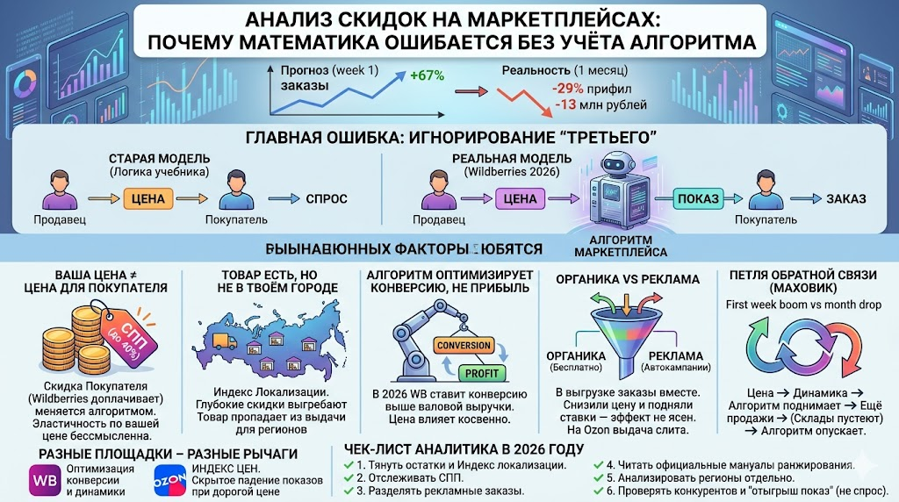

Что изменилось в анализе продаж на маркетплейсах и почему чистая математика скидок теперь промахивается. Разбор на реальном кейсе Wildberries: между продавцом и покупателем встроился третий, и пока ты считаешь эластичность, считает и он.
Меня попросили независимо оценить эффект от акции по существенному снижению цены. У меня была выгрузка из кабинета продавца Wildberries: три месяца ежедневной статистики по 1483 артикулам, я разделил период до и после старта промо, посчитал эластичность, построил декомпозицию средней цены, нарисовал тепловую карту «цена × скидка → прибыль». Получился красивый и убедительный отчет, но получился наполовину.
Когда я поговорил с экспертом по маркетплейсам, выяснилось, что половину объяснения я выбросил за скобки. Самую важную половину: как ведёт себя алгоритм Wildberries, пока я считаю эластичность.

Карта разбора: где математика скидок расходится с реальностью маркетплейса.
Что показала математика
В двух словах: компания снизила цены на части ассортимента. За первую неделю промо заказы выросли на 67%, выручка на 49%, прибыль почти не пострадала. На двухнедельном горизонте акция выглядела успешной. А на 27-дневном среднесуточная прибыль упала на 29%, и за месяц компания недополучила около 13 миллионов рублей по сравнению с любым обычным месяцем.
Уже эта вилка между неделей и месяцем должна была меня насторожить. Эластичность спроса в зоне скидок 5-10% по недельному срезу вышла около минус девяти. По квартальному около минус трёх. Цифра в учебнике одна, а по факту разная в три раза, смотря какое окно возьмёшь.
Я объяснил это эффектом новизны промо и каннибализацией маржинальных позиций. Объяснил красиво, но мимо. Увы :-(
Третий, которого нет в выгрузке
Эксперт по управлению продажами на маркетплейсах слушал меня вежливо, а потом задал один вопрос (не про коэффициенты), он спросил: "Вы уверены, что ваши покупатели вообще видели товар, по которому вы считаете спрос?"
И вот тут отчёт посыпался.
Двадцать лет назад данные о продажах были полным описанием рынка. Цена сдвинулась, спрос ответил, разница между ними и есть эластичность. Продавец и покупатель стояли друг напротив друга, между ними был прилавок и больше ничего. Сегодня между ними встал третий, и этого третьего не видно в выгрузке - Алгоритм маркетплейса. Он решает, кому, в каком регионе и на какой строке выдачи показать твой товар. И только потом, далеко потом, покупатель решает, брать или не брать.
Я считал реакцию покупателя на цену, а считать надо было реакцию покупателя на цену, пропущенную через алгоритм. Это разные числа и иногда противоположные.
Дальше эксперт разобрал по косточкам, что именно я не учёл. Получилось пять вещей, и каждая из них ломает привычный анализ цифр в своём месте.
Цена в твоей таблице это не та цена, что видел покупатель
Начнём с самого больного для аналитика. В моей выгрузке была колонка с ценой. Я честно считал по ней эластичность. Беда в том, что покупатель этой цены не видел.
Между моей ценой и тем, что показано человеку, сидит СПП, скидка постоянного покупателя. Это инструмент самого Wildberries. Площадка за свой счёт, из собственной комиссии, сбрасывает покупателю дополнительные проценты. В 2026 году СПП считается индивидуально под каждого человека и каждый товар: чем чаще ты покупаешь, тем глубже скидка, у активных доходит до 40%. Продавец при этом получает выплату по своей полной цене и в своей выгрузке видит её же. А разные покупатели видят на витрине разные цифры.
Теперь представьте, что я считаю «эластичность по цене». Я двигаю своё число, а покупатель реагирует на сумму своей цены и СПП, которую я не вижу и которой не управляю. И СПП живёт своей жизнью: алгоритм может её резко срезать или обнулить, если решит, что товар уже не «здоровый». Тогда финальная цена для покупателя подскакивает, конверсия проседает, а я в отчёте напишу «спрос остыл». Спрос не остыл. Это Wildberries перестал доплачивать за мой товар из своего кармана.
Сюда же добавьте промокоды, баллы, софинансирование акций. Цена давно перестала быть числом. Это стопка: ваша цена, минус СПП, минус промокод, минус баллы, плюс-минус акционная механика, и всё это в моменте и под конкретного человека. Эластичность, посчитанная по верхнему числу стопки, отвечает на вопрос, которого никто не задавал.
И, кстати, стратегически грамотный ход с ценой выглядит не так, как сделали в этой компании. Цены там срезали до упора и добили собственную маржу. А надо было чуть опустить, дождаться, пока алгоритм увидит рост и сам добавит СПП, и на этом остановиться. Тогда за разгон продаж доплатил бы маркетплейс, а не продавец.
Товар есть на складе, но не в твоём городе
Wildberries это не одна площадка, а набор региональных. Москвич не видит товар, который лежит в Екатеринбурге. Точнее видит, но глубоко внизу выдачи, потому что алгоритм понимает: везти три дня это плохой опыт для покупателя.
В 2026 году у этого есть точное имя и точная цена. Индекс локализации: доля заказов, которые уехали покупателям с ближайшего склада. От него зависит коэффициент логистики. Высокая локализация даёт скидку на логистику до половины, низкая удваивает её стоимость. И тот же индекс тянет карточку вверх или вниз в выдаче. То есть география склада влияет и на вашу себестоимость, и на показы, одновременно.
Дальше понятно, что случилось. Резко сбили цену, спрос рванул, локальные склады выгребли за первые дни. Товар физически переехал на дальние склады, и для половины покупателей он провалился вниз или пропал из выдачи совсем. В моей выгрузке это выглядело как «затухающий эффект промо». На деле это был не остывший покупатель, а уехавший товар. Я приписал цене то, что сделала логистика.
Алгоритм оптимизирует не твою прибыль
В мануале Wildberries для продавцов опубликованы факторы ранжирования. Самой по себе «низкой цены» в этом списке нет. Есть динамика продаж, доступность на складах, доля выкупа, рейтинг карточки, скорость доставки до покупателя. Цена влияет на выдачу опосредованно, через динамику.
И тут произошёл важный сдвиг, который многие пропустили. В 2026 году алгоритм Wildberries стал ставить конверсию выше валовой выручки. Грубо говоря, он скорее поднимет товар, который покупают часто и быстро по средней цене, чем товар, который приносит больше денег, но раскупается вяло. Площадка оптимизирует свою метрику: оборачиваемость, скорость, конверсию показа в заказ.
Мы с алгоритмом смотрели в одну таблицу и считали по ней разное. Он двигал товар по своим правилам, я мерил результат по своим. Считать в такой системе чистую эластичность цены это примерно как считать «эластичность букв в заголовке» у письма в рассылке. Буквы влияют на открытие, открытие на продажу, но связь такая длинная и так густо опосредована, что прямой коэффициент не значит почти ничего.
Спрос, который пришёл сам, и спрос, который ты купил
Вот чего двадцать лет назад не было вовсе. Сегодня заметная часть заказов на маркетплейсе это оплаченный показ. Внутренняя реклама: ставки за место в выдаче, автокампании, продвижение по ключевым словам. В апреле 2026 Wildberries перестроил аукцион так, что место наверху получает не тот, кто больше заплатил, а тот, у кого выше «коэффициент полезности», то есть смесь ставки, конверсии, локализации и скорости доставки.
Что это значит для цифр. В выгрузке заказы лежат в одной колонке. Но часть из них пришла потому, что товар нашли сами, а часть потому, что вы за этот показ заплатили. Считая эластичность по общей сумме заказов, вы складываете спрос, который есть, со спросом, который вы купили. Снизили цену и одновременно подняли ставку в рекламе? Поздравляю, теперь невозможно сказать, что сработало.
На Ozon шов между платным и органическим вообще исчез. С середины 2025 года органическая и рекламная выдача там живут в одной модели ранжирования, и рекламная ставка участвует в общем конкурсе наравне с продажами и отзывами. Разделить «настоящий» спрос и «проплаченный» по итоговой выгрузке уже нельзя в принципе. Если вы не тянете рекламные показы отдельно от органических, ваша эластичность это средняя температура по двум очень разным больницам.
Продажи двигают выдачу, выдача двигает продажи
А это гвоздь, на котором висит вся вилка между неделей и месяцем. Самая коварная вещь, потому что выглядит как обычная причинно-следственная связь, а на деле петля.
Смотрите, как раскручивается маховик. Вы снизили цену. Продажи чуть подросли. Алгоритм увидел рост динамики и поднял карточку выше. Показов стало больше, продажи выросли ещё. От чего именно вырос спрос? От цены или от того, что алгоритм поднял товар, потому что заметил движение, которое вы запустили ценой? Простая регрессия «цена → заказы» это не разделит никогда. Цена тянет спрос и напрямую, и через алгоритм, а алгоритм бьёт обратно по спросу. Это не шум в данных, который можно усреднить. Это обратная связь, зашитая в саму конструкцию.
И вот теперь вилка объясняется без всякой «новизны промо». В первую неделю маховик раскрутился: цена вниз, динамика вверх, карточка вверх, заказы плюс 67%. А дальше всё посыпалось в обратную сторону. Локальные склады опустели, индекс локализации упал, карточка просела. СПП снялась, потому что алгоритм решил, что разгон кончился. Эффект новизны выдохся. Маховик, который цена раскрутила за неделю, за месяц встал. Поэтому недельная эластичность минус девять, а квартальная минус три. Цена здесь виновата на треть. Остальные две трети это работа алгоритма, которую я записал на счёт цены.
На Ozon те же законы, но рычаги другие
Стоит выйти за пределы одной площадки, и становится видно главное: проблема не в Wildberries. Проблема в самой конструкции «между продавцом и покупателем стоит алгоритм». Только рычаги у каждого свои, и устроены они по-разному.
У Ozon, например, есть индекс цен. Площадка сравнивает вашу цену с ценой на этот же товар в других местах, в том числе на других маркетплейсах. Чем вы дешевле рынка, тем выше приоритет: при хорошем значении товар получает статус «выгодного» и максимальные показы. А если вы дороже конкурентов, Ozon просто молча снижает вам показы. Без штрафа, без уведомления, без единой строчки в кабинете.
Вдумайтесь, что это делает с анализом. Ваш спрос может рухнуть, хотя вы не трогали цену и покупатель никуда не делся. Просто конкурент на соседней площадке опустил ценник, ваш индекс цен поехал, и алгоритм Ozon тихо задвинул вас вниз. В вашей выгрузке это выглядит как падение спроса на ровном месте. Причина при этом вообще вне вашего кабинета.
Мораль простая. У каждой площадки свой набор скрытых рычагов, и эти рычаги перенастраивают по нескольку раз в год. Wildberries переписал аукцион в апреле 2026. Ozon осенью 2025 слил продвижение в один инструмент и свёл органику с рекламой в одну модель. Никакой универсальной «эластичности маркетплейса» не существует, и завтрашняя будет отличаться от сегодняшней.
Что теперь означает число в выгрузке
Соберём всё вместе, потому что вывод тут не про список из пяти поправок к формуле. Поправками не отделаешься. Сменился сам объект анализа.
Раньше число в выгрузке описывало покупателя. Сегодня оно описывает покупателя, отфильтрованного через текущую политику алгоритма по этому товару, в этом регионе, при этом остатке на ближайшем складе, в этом такте СПП, при этой ставке за показ. Эластичность из такой выгрузки производная величина, а не первичная. Она показывает не «как люди реагируют на цену», а «как люди реагируют на цену после того, как с ней поработал алгоритм».
И тут я скажу то, ради чего вообще сел переписывать тот отчёт. Пока все вокруг спорят, какую модель эластичности взять и какой коэффициент считать правильным, настоящий вопрос лежит этажом ниже. Не «чему равна эластичность», а «что вообще теперь измеряет эта цифра». Это вопрос не про математику. Это вопрос про то, кто и что стоит между числом и живым человеком. Математику можно вычистить до блеска и всё равно ответить не на тот вопрос, что я и сделал.
Если спуститься с этого этажа к практике, аналитик на маркетплейсе в 2026 году обязан как минимум вот что.
- Тянуть рядом с продажами ещё три потока данных: остатки и индекс локализации по складам, размер и наличие СПП на карточках, долю заказов из рекламы отдельно от органики.
- Читать официальный мануал по ранжированию той площадки, где работаете. Не пересказы блогеров, а первоисточник. И перечитывать его, потому что правила меняются по нескольку раз в год.
- Разносить регионы. «Средняя по больнице» на маркетплейсе врёт сильнее, чем где угодно: один и тот же товар в разных городах в разной доступности и на разных строках выдачи.
- Прежде чем написать «покупатель остыл», проверить три вещи: не уехал ли товар на дальний склад, не снялась ли СПП, не опустил ли конкурент цену на соседней площадке. Падение продаж чаще про показ, чем про спрос.
- Не мерить эффект цены простой регрессией «цена → заказы». Они завязаны в петлю через алгоритм. Минимум, что спасает: контрольная группа артикулов, которые вы не трогали, и горизонт в месяц, а не в неделю.
- Помнить, что в колонке «цена» лежит ваша цена, а не та, что видел покупатель.
Что осталось от эластичности
Расставаться приходится с привычкой к красивым универсальным графикам. Эластичность спроса осталась мощным инструментом там, где между продавцом и покупателем никого нет. На маркетплейсе она работает как термометр, прислонённый к стене вместо лба. Цифра показывает что-то, она даже шевелится, когда меняется температура, но к человеку имеет отношение очень косвенное.
Моему отчёту это не помешало быть полезным. Он показал собственнику размер ущерба, дал основания для трудного разговора с менеджментом, нашёл «золотые ячейки», где даже глубокая скидка работает в плюс. Но ответил он на вопрос «насколько глубоко мы порезали маржу». А собственнику нужен был другой вопрос: «почему наш собственный товар перестал показываться нашим покупателям». На него данные в моей модели не отвечали и не могли ответить. В модели не было самого важного игрока.
Хорошо, что нашёлся коллега, который это сказал, но и я молодец - прежде чем бежать отдавать отчет - я нашел гуру и попросил его покритиковать. :-)